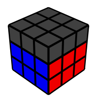
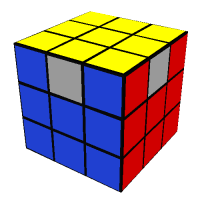

The CFOP method which stands for Cross, F2L, OLL and PLL is a commonly used speedsolving method that was invented by Jessica Fridrich during the early 1980s.The method works on a layer-by-layer system, first solving a cross typically on the bottom, continuing to solve the first two layers (F2L), orienting the last layer (OLL), and finally permuting the last layer (PLL).
This first stage involves solving the four edge pieces in one outer layer of the puzzle, centering around a commonly coloured centre piece. Many speedcubers usually solve the cross on the bottom side to avoid cube rotations and to get an overall better view.
In F2L, corner and edge pieces are paired up and later moved to their correct location. There are 42 standard cases for each corner-edge pair including the case where it is already solved. It can also be done intuitively.
This stage involves manipulating the top layer so that all the pieces there have the same colour on top. This stage involves a total of 57 algorithms. A simpler version, called "two-look OLL" orients edges first and corners afterwards.
The final stage involves moving the pieces of the top layer to solve the cube. There is a total of 21 algorithms. They are name using letter names, usually based on the arrow that represent each pieces that swap around.
